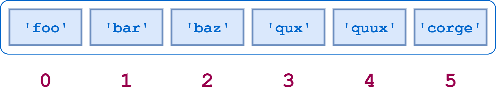
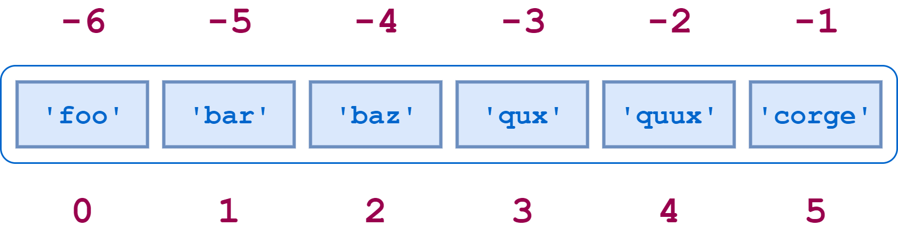

Python 101
Week 3:
Lists
Expedia Code Academy

Lists
A list acts as a single variable to store lots of data.
Each of those values is called an element of the list and can be accessed by its position, or index.

Lists
In Python, you can define lists like this:
# a list of strings
expedia_brands = ['Hotels.com', 'EPS', 'Expedia']
# a list of numbers
exam_grades = [40, 55, 99, 73]
# a list containing mixed types
a_bit_of_everything = ['hello!', 2, True, 0.535]
# a list of lists
words = [['hello', 'yes', 'no'], ['hola', 'si', 'no']]
Lists
You can pick out items from a list by using their index which starts from 0, and also ends in -1. 
# a list of strings
expedia_brands = ['Hotels.com', 'EPS', 'Expedia', 'Egencia']
print(expedia_brands[0]) # 'Hotels.com'
print(expedia_brands[2]) # 'Expedia'
print(expedia_brands[-1]) # 'Egencia'
print(expedia_brands[-2]) # 'Expedia'
Checkpoint
What error do you see if you try accessing an element that doesn't exist?
(⭐) 3a. How would you check if the first and last elements of a list are the same?
Lists exercise
It is useful to know the number of items in a list too:
# Create a list
random_numbers = [31, 5.36, 0, 25, 535, 42.3]
length = len(sentence)
print(length) # 6
(⭐⭐️) 3b. Find the average of random_numbers
Hint: add all the numbers together then divide by how many numbers there are
Hint: add all the numbers together then divide by how many numbers there are
Building lists
# Start with a list
sentence = ['Programming', 'is']
# Add an item to the end
sentence.append('fun')
print(sentence)
# To create an empty list
empty_list = []
(⭐⭐️️️) 3c. Build a list of 1-100 yourself using append and a while loop
Building lists
We can concatenate two lists together.
# Create two lists
sentence_start = ['Programming', 'is']
sentence_end = ['really', 'fun']
# Join the two lists together using the + operator
sentence = sentence_start + sentence_end
print(sentence)
List Membership
Sometimes it's useful to find if an element exists in a given list.
expedia_brands = ['Hotels.com', 'EAN', 'Expedia']
if 'Booking.com' in expedia_brands:
print('Something must be wrong!')
if 'Hotels.com' in expedia_brands:
print('Yay!')
Get Bob to say more! See here for the full conversation, and here for the solution to the original Bob exercise.
Appendix: Sorting & Slicing
We can sort lists:
random_numbers = [5, 3, 4, 6, 1, 2]
sorted_numbers = sorted(random_numbers)
print(sorted_numbers) # displays [1, 2, 3, 4, 5, 6]
Or take sections (called slices) of a list:
letters = ['a', 'b', 'c', 'd', 'e', 'f']
letters[1:3] # results in ['b', 'c']
letters[2:3] # results in ['c']
Appendix: Exercises
numbers = [65, 4, 9, 23, 15, 875, 3.69, 33, 12, 79, 6]
(⭐️⭐️) 3e. Write a program to print the lowest and highest numbers
(⭐️⭐️️️️⭐️️️) 3f. Write a program that splits a list into two halves - if there's an odd number of elements the second list will be longer